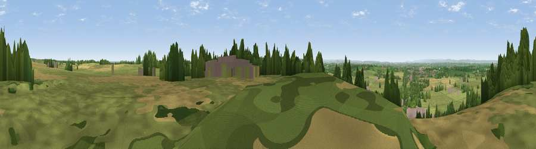

Viewpoint near Old Sodbury
#9900 in England · top 11% of its area beats it · near Old Sodbury · path 160 mWhere it is
The exact computed spot (ST 75875 81475). Click the marker for map links.
Public access: the nearest public right of way is about 160 m away — the final stretch may cross private land. Computed from Natural England's CRoW access layer and OpenStreetMap rights of way — not the legal definitive map. Always verify locally.
The view, rendered

A 360° render of this exact spot computed from the terrain model, tree cover and land cover — summer colours, afternoon light, calibrated against photographs of famous viewpoints. Real trees, hedges and buildings will differ in detail.
The panorama
Grey silhouette: terrain skyline in each direction (720 bearings, Earth curvature and refraction included). Dashed green: skyline with trees (+15 m) and buildings (+8 m) as obstacles. Blue strip: how far the ground is visible on each bearing.
Where the view opens
Wedge length = distance to the farthest visible ground on that bearing (vegetation-aware). Rings at 10, 25 and 50 km.
What fills the view
55% grassland · 23% cropland · 17% woodland · 5% built-up
Angular shares of the visible panorama (visual magnitude), not map area. Landscape diversity 0.49 (0–1 Shannon).
Key numbers
More beautiful places nearby
The staircase of upgrades: each row has a higher view potential than everything closer. Driving times are estimates from straight-line distance, calibrated against real road routing — check an actual route before setting out.
| Place | Direction | Drive | Score |
|---|---|---|---|
| Viewpoint near Horton | N · 3 km | ~7 min | 65.3 |
| Viewpoint near Hinton | S · 4 km | ~9 min | 65.8 |
| Viewpoint near Horton | NNE · 4 km | ~9 min | 66.9 |
| Viewpoint near Wortley | N · 11 km | ~21 min | 67.8 |
| Hanging Hill | SSW · 12 km | ~23 min | 76.4 |
| Viewpoint near Stinchcombe | N · 17 km | ~29 min | 80.5 |
| Nottingham Hill | NNE · 52 km | ~73 min | 80.9 |
| Chase End Hill | N · 54 km | ~76 min | 81.5 |
51.53166, -2.34918 · source: screening · position refined by local search. Computed location — check access rights before visiting.